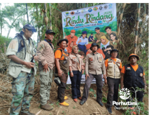

BANDUNG UTARA, PERHUTANI (17/01/2026) | Perum Perhutani Kesatuan Pemangkuan Hutan (KPH) Bandung Utara melalui Saka Wanabakti Kota Bandung turut berpartisipasi dalam kegiatan aksi penanaman bertema “Rindu Rindang Kota Bandung: Kolaborasi Kami untuk Bumi”. Kegiatan penanaman tersebut dilaksanakan di Kampung Gadog RW 09, Kelurahan Pasirwangi, Kecamatan Ujung Berung, Kota Bandung, pada Rabu (14/01).
Kegiatan ini merupakan bagian dari upaya meningkatkan indeks hijau dan daya dukung ekologi perkotaan, sekaligus memperkuat kesadaran masyarakat akan pentingnya pelestarian lingkungan. Aksi penanaman tersebut melibatkan berbagai unsur lintas sektor sebagai wujud kolaborasi bersama dalam menjaga kelestarian lingkungan.
Turut hadir dalam kegiatan tersebut perwakilan Saka Wanabakti Kota Bandung, Badan Penanggulangan Bencana Daerah (BPBD) Kota Bandung, Forum Pengurangan Risiko Bencana (FPRB) Kota Bandung, Dinas Perhubungan (Dishub), Dinas Perumahan dan Kawasan Permukiman (DPKP), serta komunitas Brotherhood For Ecology and Conservation (BFEC) dan Bikers Brotherhood Motorcycle Club (BBMC).
Administratur KPH Bandung Utara selaku Majelis Pembimbing Satuan Karya Pramuka (Mabisaka) Wanabakti Kota Bandung, Dedy S.J. Mulyanto, menyampaikan apresiasi atas keterlibatan Saka Wanabakti Kota Bandung dalam kegiatan penanaman tersebut. Menurutnya, kegiatan ini merupakan bagian dari upaya bersama untuk meningkatkan indeks hijau, memperkuat daya dukung lingkungan, serta menumbuhkan kepedulian masyarakat terhadap pelestarian lingkungan dan kawasan hutan.
Sementara itu, Ketua Forum Pengurangan Risiko Bencana (FPRB) Kota Bandung, Eka Sandi Subrata, menilai kegiatan ini sebagai bentuk kolaborasi positif antara pemerintah, masyarakat, dan organisasi dalam menjaga lingkungan sekaligus mengurangi risiko bencana.
Melalui kegiatan “Rindu Rindang Kota Bandung: Kolaborasi Kami untuk Bumi”, diharapkan dapat terbangun kesadaran kolektif masyarakat akan pentingnya menjaga lingkungan, serta menjadi contoh bagi pelaksanaan kegiatan serupa di masa mendatang. (Kom-PHT/Bdu/Dan)
Editor: WK
Copyright © 2026 Warta Nusantara Barat